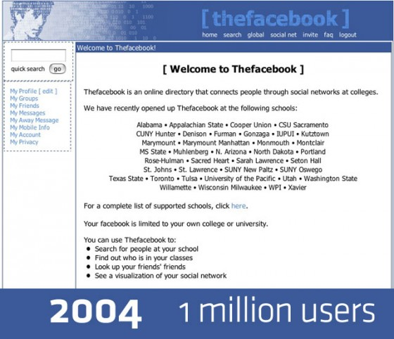
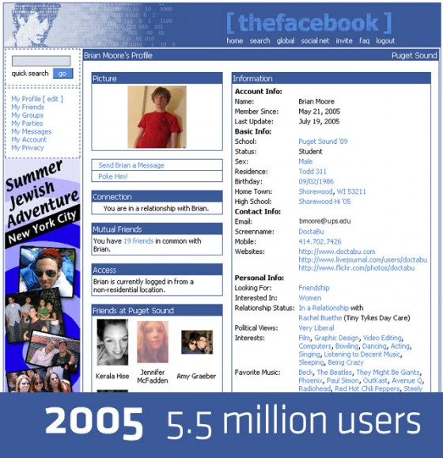
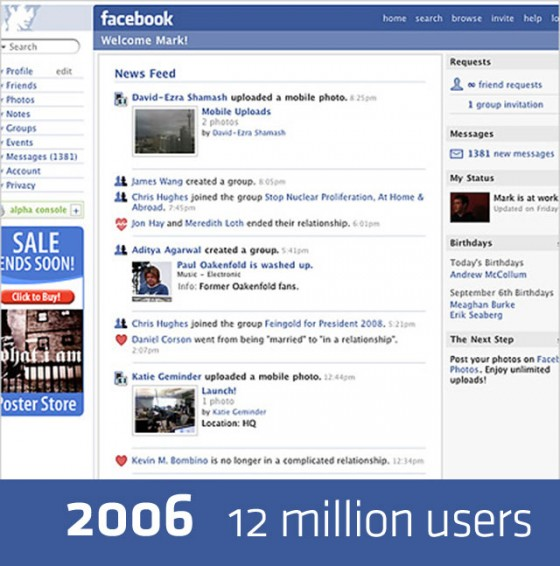
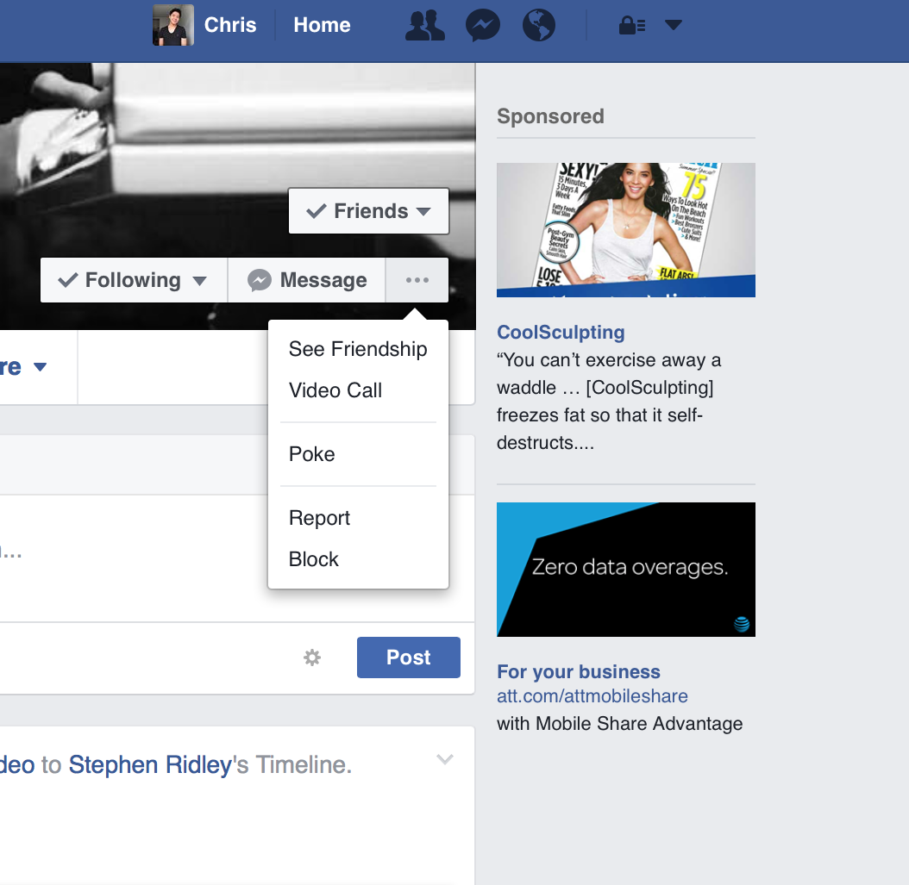
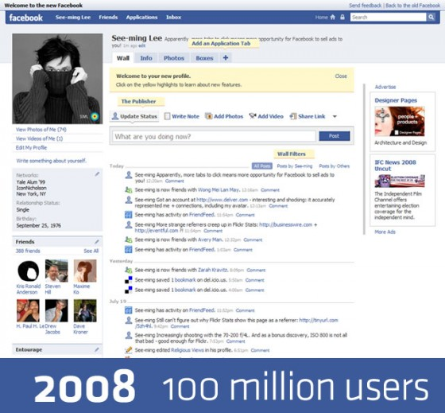
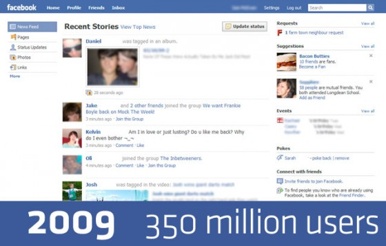
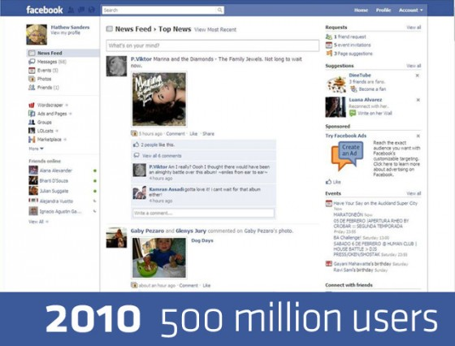
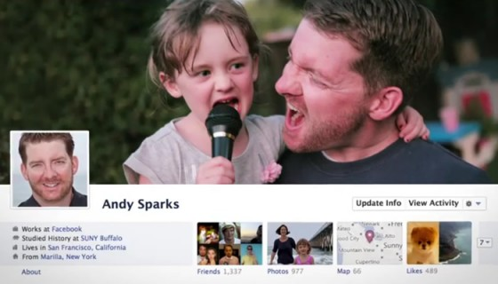
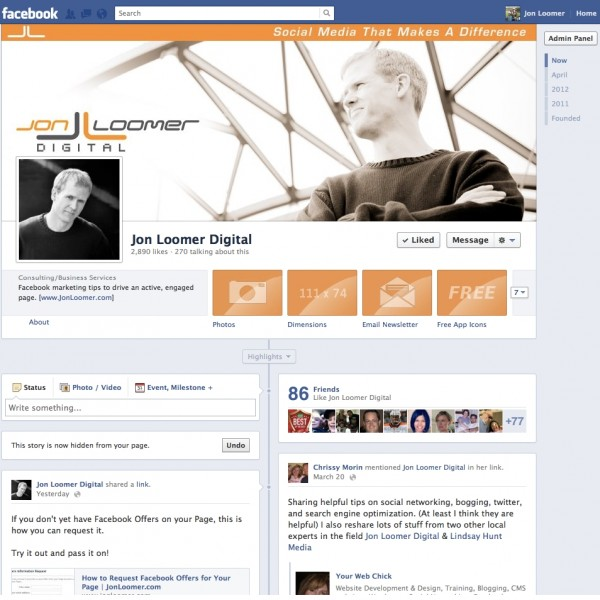

This presentation is on the history of Facebook change from 2004 to 2016.
Go back Mac OS ClassicThe design of Mac OS informs much of how we think of mouse cursors today. Their limited resolution, effected their aesthetic representation.
2004: Launched as TheFacebook.com, limited only to Harvard and few other universities’ students. No photos, walls, new feeds, events or pages yet.
2005:
• Purchased facebook.com domain for $200k and dropped “the”
• Introduced Photos
• September: High school version launched
2006:
•Upgrade more features: friends details
• March: Redesigned Groups and Events
• Spring: Expanded to include work networks Facebook Notes
• October 27: Share links to articles, photos and videos
• October 31: Share Button
• Fall: Privacy controls for when you poke, message and add friends
• December: Profile picture photo album, keeps history of your profile photos

"Poking is existed when Facebook first came out in 2004. What did it mean if someone poked you? Facebook wouldn’t tell you. All it would say was “Poke Him!”
or “Poke Her!” or “You poked [your friend].” If you went to Facebook’s help pages, Facebook was coy: “When we created the poke, we thought it would be cool
to have a feature without any specific purpose,” Facebook said. “People interpret the poke in many different ways, and we encourage you to come up with your own meanings.”
2007:
• April11: My Messages and My Shares changed to Inbox
• July: Post Attachments to the Wall
• Nov 6: Social Ads launched, making advertising relevant
2008:
• April 15: Import activities from Flickr, Picasa, Yelp, Youtube, Pandora and other sites
• Suggest friends to other friend
• Facebook for iPhone Application
• July 21: The Wall
• July 21: New tabbed profile design (Wall, Info, Photos, Boxes)
• December 5: Higher quality video
2009:
• January 7: 150 Million Users
• January 30: Birthday Reminders
• February 9: Like button added to friends’ content
• March 11: New Home Page design, real-time stream, new filters, improved Publisher, Highlights
• March 16: “Everyone” option available to create public posts
• May 4: News Feed now updates in real time, no longer needing to be refreshed
• May 8: Family Relationships added
• May 11: Facebook Chat updated to include Friend Lists and Offline Mode
• May 11: Notifications appear in real time above chat bar as pop-up alerts
• May 19: Increased size limit of photo albums from 60 to 200 photos
• June 18: Streamlined Inbox
• June 22: Display alternate names
• August 20: Publish Facebook Page content to Twitter
• September 14: Tag Friends in Status Updates
• October 23: Change to two views: News Feed and Live Feed
• October 23: Friends Suggestion Box
• October 26: Share Count added to Share Button
• November 17: Xbox Connects with Facebook
• December 16: Relationship Anniversaries Added to Profile
2010:
• February 5: Faster, Simpler Photo Uploader
• March 1: New Applications and Games Dashboard
• March 1: Bookmark Applications
• March 1: Become a Fan of Application Facebook Pages
• March 2: Maximum Size of Photos Increased to 720 Pixels
• April 19: Now “Like” a Facebook Page instead of “Become a Fan”
• April 21: Social Plugins (Like, Activity Feed, Recommendations)
• June 16: Added the ability to Like a Comment
• August 18: Check in at Facebook Places
• September 15: Update to Facebook Chat
• September 30: Improvements to Photos: Higher
Resolution, New Photo Viewer, Easier Tagging and Uploading• November 15: Seamless Facebook Messaging (SMS, Chat, email or Messages)
• December 5: New Facebook Profile
• December 15: Face Recognition Photo Tagging
2011:
• January 19: Facebook for Feature Phones Application
• July 6: Video Calling and Other Improvements to Facebook Chat
• September 14: Subscribe Button
• September 20: Top Stories on News Feed
• September 22: Facebook Timeline for Profiles
• October 10: Facebook for iPad
• October 19: Facebook Messenger Mobile Application
• December 7: Updated Facebook for Android Application
• December 15: Timeline Available on Mobile
2012:
• January 18: Apps for Timeline launched, allowing frictionless sharing
• February 1: IPO Filing
• February 29: Facebook Timeline for Pages
• March 3: Facebook Interest Lists

2016:


• Emojis in Facebook messenger and comment boxes

• More interaction emojis in comment boxes other than just like button.


• Live Stream
Mac OS Classic